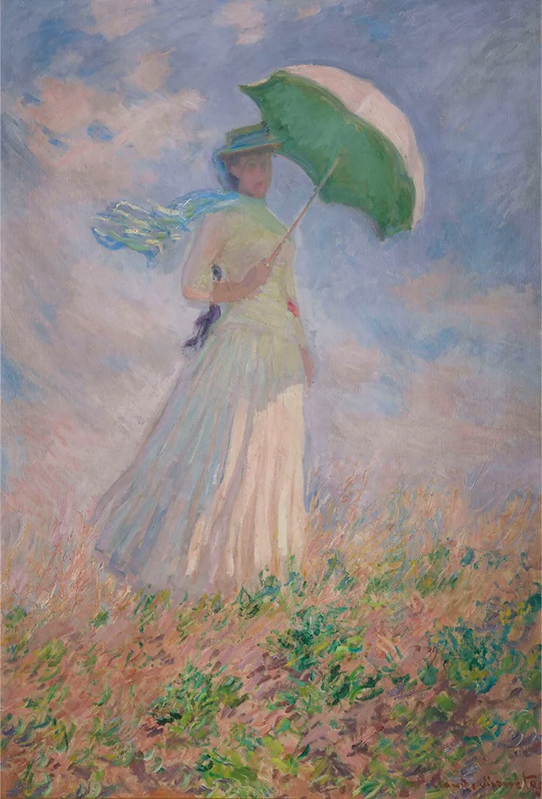
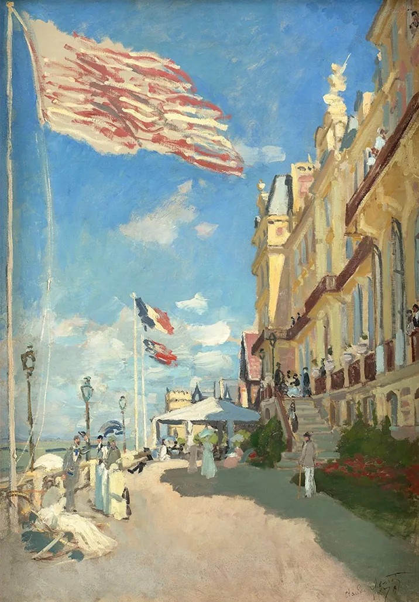

印象派の巨匠クロード・モネ（1840-1926）は、自然光の移ろいに魅せられ、その美しさをカンヴァスにとどめようと生涯をかけて探求しました。その作品41点を含む、オルセー美術館所蔵の約90点に、国内の美術館や個人所蔵作品を加えた合計約140点で、風景画家としてのモネの魅力に迫ります。
オルセー美術館から世界最高峰のモネ・コレクション、一挙来日。

《戸外の人物習作－日傘を持つ右向きの女》 1886年 オルセー美術館蔵
Photo © GrandPalaisRmn (musée d’Orsay) / Stéphane Maréchalle / distributed by AMF
Photo © GrandPalaisRmn (musée d’Orsay) / Stéphane Maréchalle / distributed by AMF

《睡蓮の池、緑のハーモニー》 1899年 オルセー美術館蔵
Photo © GrandPalaisRmn (musée d’Orsay) / Stéphane Maréchalle / distributed by AMF
Photo © GrandPalaisRmn (musée d’Orsay) / Stéphane Maréchalle / distributed by AMF

《サン=ラザール駅》 1877年 オルセー美術館蔵
Photo © GrandPalaisRmn (musée d’Orsay) / Benoît Touchard / distributed by AMF
Photo © GrandPalaisRmn (musée d’Orsay) / Benoît Touchard / distributed by AMF

Photo © GrandPalaisRmn (musée d’Orsay) / Gabriel de Carvalho / distributed by AMF
日本初出品
《トルーヴィル、ロシュ・ノワールのホテル》 1870年 オルセー美術館蔵Photo © GrandPalaisRmn (musée d’Orsay) / Gabriel de Carvalho / distributed by AMF

《睡蓮の池》 1907年 石橋財団アーティゾン美術館蔵

《かささぎ》 1868 - 69年 オルセー美術館蔵
Photo © GrandPalaisRmn (musée d’Orsay) / Adrien Didierjean / distributed by AMF
Photo © GrandPalaisRmn (musée d’Orsay) / Adrien Didierjean / distributed by AMF

日本初出品
《昼食》 1873年頃 オルセー美術館蔵Photo © GrandPalaisRmn (musée d’Orsay) / Franck Raux / distributed by AMF

《パリ、モントルグイユ街、1878年6月30日の祝日》 1878年 オルセー美術館蔵
Photo © Musée d’Orsay, Dist. GrandPalaisRmn / Patrice Schmidt / distributed by AMF
Photo © Musée d’Orsay, Dist. GrandPalaisRmn / Patrice Schmidt / distributed by AMF